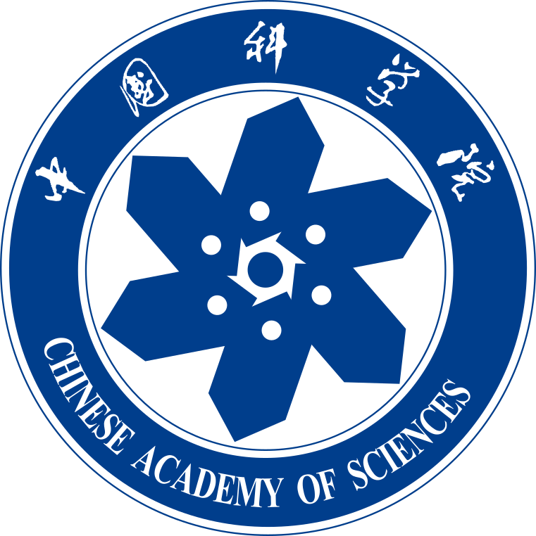

About
Yu Liu is a Ph.D. student at the Institute of Information Engineering, Chinese Academy of Sciences (IIE, CAS), advised by Prof. Yanbing Liu. His research interests include AI agents, data mining, and AI4Science.
News
Aug. 2026
Jul. 2026
Secure Cooperative Offloading Across Domains with DIB-Enhanced Multi-Agent RL and Credence Mutual Information
 IEEE TSC · minor revision
IEEE TSC · minor revisionMar. 2026
PRISMA: A Schema-Coordinated Multi-Agent Framework for Open-Domain Multi-Hop Question Answering
IEEE TKDE · under reviewMar. 2026
 I am excited to share that I have started my internship at Xiaomi Research!
I am excited to share that I have started my internship at Xiaomi Research!Publications
Jul. 2026
MIRAGE: How Conversation State Shapes Historical Evidence Use in Multimodal Personal Agents
 ACM MM 2026
ACM MM 2026Jul. 2026
Music Hallucination in Audio-Language Models: A Hierarchical Formulation and Empirical Study
ACM MM 2026Jun. 2026
CARE: Pre-Execution Command Verification for Shell-Executing LLM Agents
ISSRE 2026 · paperApr. 2026
Apr. 2026
Jan. 2026
Jan. 2026
STIndex: A Context-Aware Multi-Dimensional Spatiotemporal Information Extraction System
WWW 2026 · paperNov. 2025
Collaborative Projects
 |
2025 – now | Carnegie Mellon University — Protein generation, with Prof. Barnabas Poczos · Pittsburgh, USA |
| 2026 – now | National University of Singapore — AI4MOFs, with Guobin Zhao · Singapore | |
| 2024 – now | The University of Western Australia — DFAT New Colombo Plan (NCP) Mobility Program, with Prof. Jin B. Hong · Perth, Australia | |
| 2026 – now | Central Conservatory of Music — AI4Music · Beijing, China |
Education
 |
2024 – now | Institute of Information Engineering, Chinese Academy of Sciences — Ph.D. student, advised by Prof. Yanbing Liu · Beijing, China |
| 2021 – 2024 | The University of Western Australia — M.S., Software Engineering, Department of Computer Science and Software Engineering, advised by Prof. Jin B. Hong · Perth, Australia | |
| 2019 – 2021 | Curtin University — C.S. Academic Bridging Programs, School of Electrical Engineering, Computing and Mathematical Sciences · Perth, Australia | |
| before 2019 | Traditional Chinese Music — Dizi (Chinese bamboo flute). Trained in music from primary school through university, with a playing style inherited from Prof. Xiang Qu, before changing majors to pursue a bachelor's degree in Software Engineering. |